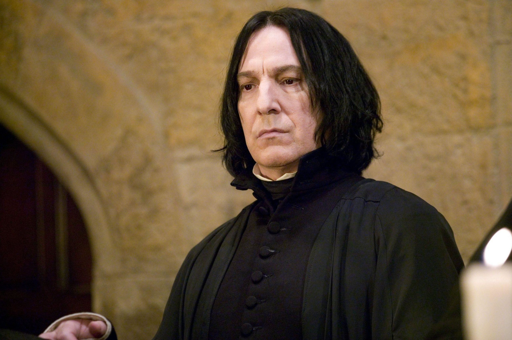

Emma Watson
Emma Charlotte Duerre Watson is an English actress and activist. Known for her roles in both blockbusters and independent films, as well as for her women's rights work, she has received a selection of accolades, including a Young Artist Award and three MTV Movie Awards..
Alan Rickman
Alan Rickman was an English actor of the stage and screen. Rickman gained international acclaim for his role as Severus Snape in the Harry Potter film series and Hans Gruber in the action film Die Hard.
Tom Holland

Thomas Stanley Holland is an English actor. His accolades include a British Academy Film Award, three Saturn Awards, a Guinness World Record and an appearance on the Forbes 30 Under 30 Europe list. Some publications have called him one of the most popular actors of his generation.